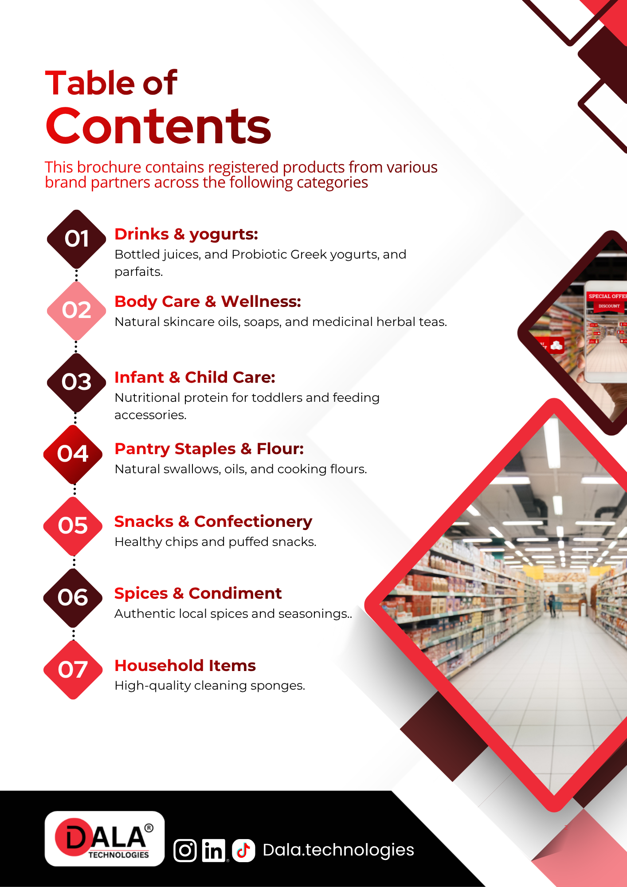
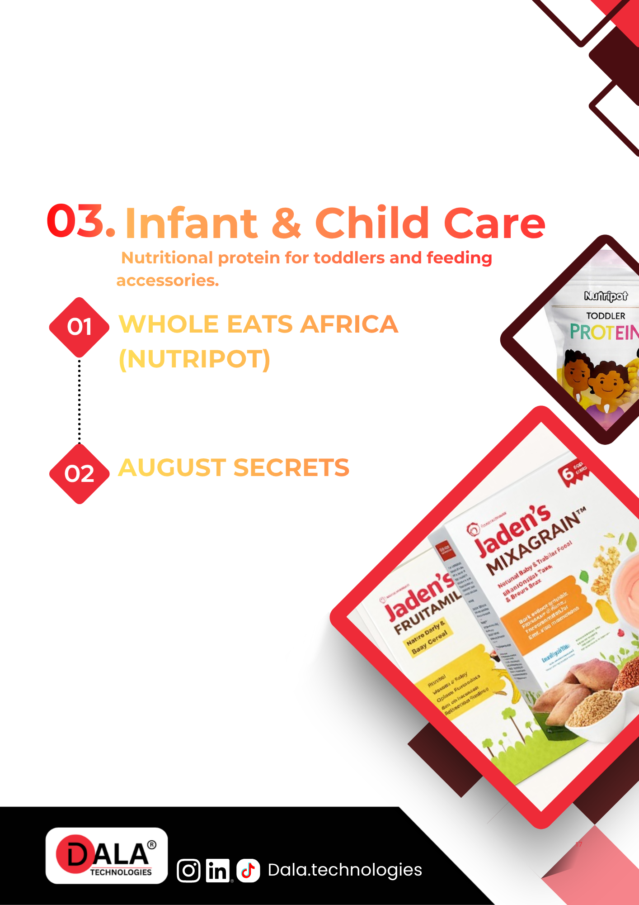
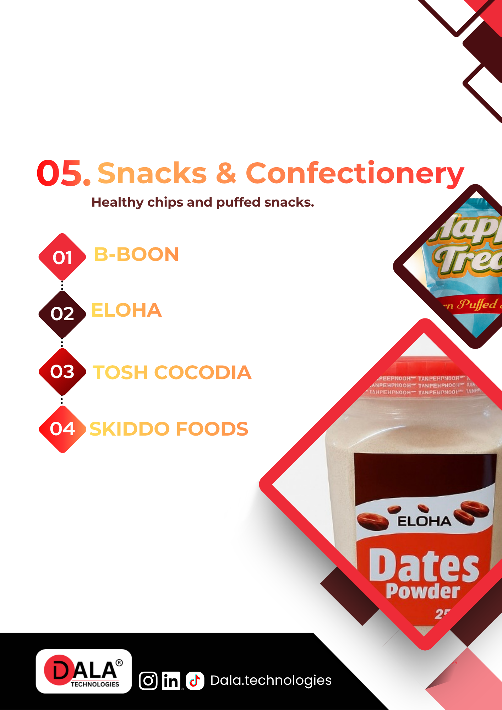

Browse the DALA catalog like a retail collection.
This is a cleaner, hosted way to explore our catalog without Canva links or document clutter. Jump straight into each collection, preview the pages that matter, and share one simple link externally.


From drinks and pantry staples to infant care, spices, and household essentials, the catalog is organized into clear retail collections.
Choose a collection and jump directly into it.
The collection cards below give you a quick way to move through the catalog without scrolling through the full document blindly.

Drinks & Yoghurt
Juices, milk drinks, yoghurt lines, and beverage-led categories positioned for fast retail browsing.
Body Care & Wellness
Personal care and wellness-focused products arranged in a cleaner, easier-to-share collection view.

Infant & Child Care
Dedicated early-life essentials presented as a focused category rather than buried in a long document.

Pantry Staples & Flour
The deepest collection in the catalog, spanning shelf-ready staples, flour products, and core home essentials.

Snacks & Confectionery
Impulse-friendly shelf categories grouped for quick review when you need confectionery and snack options fast.

Spices & Condiments
Cooking essentials, seasoning lines, and flavor products surfaced cleanly for category-level browsing.

Household Items
The closing household collection, useful for quick external sharing when someone needs the practical home range.
Drinks & Yoghurt
A beverage-led collection with juices, milk drinks, and yoghurt lines, arranged as clear, zoomable catalog spreads.


Body Care & Wellness
Personal care and wellness products, grouped into a section that is faster to scan and simpler to share externally.


Infant & Child Care
A compact category designed to be easy to review quickly when a buyer or partner needs the child-care range in one place.


Pantry Staples & Flour
The deepest shelf category in the catalog, collected into one long section so pantry products can be reviewed without distractions.


Snacks & Confectionery
Impulse-led snack and confectionery products gathered into a section that is easier to skim and share with trade partners.


Spices & Condiments
Seasonings, condiments, and kitchen flavor lines surfaced in a dedicated section for simpler category review.


Household Items
The final household section closes the catalog with home-use lines that can still be shared directly from one clean URL.